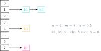

goes to bucket , collisions are chained in the bucket; with load factor bounded (0.75 in
goes to bucket , collisions are chained in the bucket; with load factor bounded (0.75 in  on average, and when
on average, and when Construction
- Index:
HashMapmixes the high bits into the low ones, , then takesh & (m-1)with a power of two.
a power of two. - Collisions: separate chaining (list per bucket); since Java 8 a bucket with more than 8 entries becomes a balanced tree, bounding the worst case at
 for comparable keys.
for comparable keys. - Lookup: find the bucket, then compare hashes and call
equalson each entry of the bucket. - Resize: when , allocate buckets and reinsert every entry.
Derivation
With uniform hashing a bucket holds on average  entries, so an unsuccessful search inspects of them and a successful one about . Doubling at costs
entries, so an unsuccessful search inspects of them and a successful one about . Doubling at costs  , but it happens after insertions since the previous doubling; spreading the cost gives a constant per insertion: total moves for
, but it happens after insertions since the previous doubling; spreading the cost gives a constant per insertion: total moves for  insertions.
insertions.
Picture

Intuition
Hashing turns "search the whole list" into "go straight to the right drawer and look through the few items in it".
Pitfall
A poor hashCode (constant, or using few fields) puts everything in one bucket and turns into ; and iteration order of a HashMap is not insertion order — use LinkedHashMap when it matters.